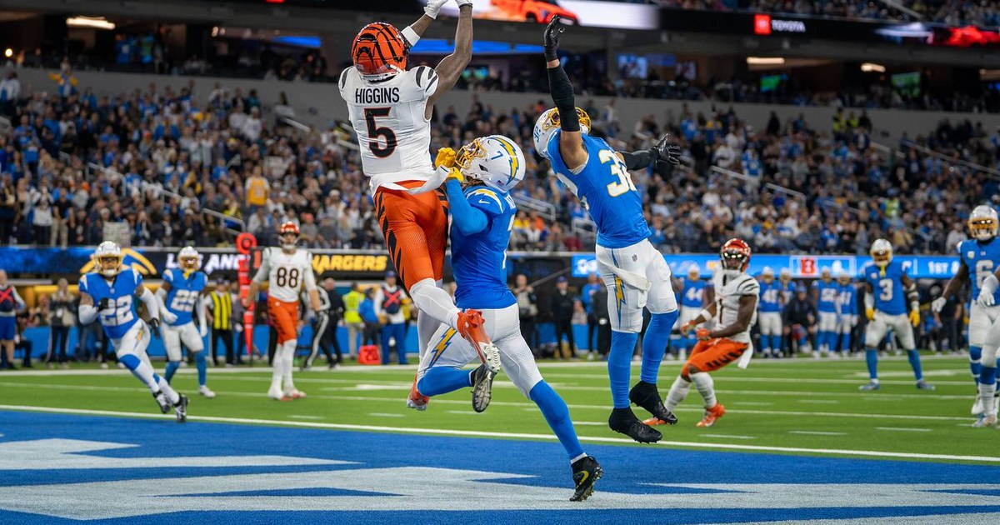

TSL Bets: The Monday night parlay (~+414) — Higgins OVER 74.5 receiving yards, Diggs anytime TD
Tee Higgins averages 91.6 receiving yards a game against the NFL's second-worst pass defense, and Stefon Diggs has scored in 5 of 8 games as Washington's clear WR1. Two legs, about +414.

The game
Cincinnati Bengals (7-2) at Washington Commanders (3-5-1) — 8:15 PM ET, Northwest Stadium, Landover, MD, ESPN
Bengals -6, total 54.5, moneyline -295 / +240 (BetMGM). Weather: cloudy, 56°F at kickoff, NW wind ~7 mph, 0% rain — no factor.
Injuries — Cincinnati: G Dalton Risner OUT (knee). LB Oren Burks OUT (groin, IR). WR Andrei Iosivas doubtful (thumb). CB Jalen Davis doubtful (hamstring). G Dylan Fairchild questionable (oblique — practiced fully Saturday). S Kyle Dugger questionable (quadriceps). CB Dax Hill questionable (illness). LB Swayze Bozeman questionable (forearm). G Brian Parker II questionable (knee). Joe Burrow carries no designation (illness cleared). Tee Higgins carries no designation (knee, full participant).
Injuries — Washington: RB Jacory Croskey-Merritt questionable (groin). RB Rachaad White questionable (heel). C Lucas Patrick questionable (concussion). CB Amik Robertson questionable (ankle). QB Jayden Daniels is healthy — 23-of-33 for 249 yards and 3 touchdowns last week against the Giants. WR Terry McLaurin is on IR (knee, out for the season).
Storylines: The Bengals have won five straight behind Joe Burrow's 27 touchdown passes in nine games, and Washington ranks second-worst in the NFL in passing yards allowed (244.8 a game). The 54.5 total is the highest on the Week 11 board — the market expects a shootout. Washington stayed alive in the NFC East with a late 24-21 win over the Giants in Week 10, sealed by Stefon Diggs' 32-yard game-winning touchdown catch with 57 seconds left.
Leg 1 — Tee Higgins OVER 74.5 receiving yards
Higgins has 824 receiving yards and 6 touchdowns on 53 catches through nine games — 91.6 yards a game — and needs 176 more yards to reach 1,000 on the season. His recent form is loud: 155 yards (10 catches, 2 TDs) vs. Tennessee, 148 yards (6 catches, 1 TD) at Baltimore, 32 yards (5 catches, 2 TDs) vs. Atlanta. He is Burrow's second option in an offense that just put up 409 passing yards, and he draws a Washington secondary that is second-worst in the league against the pass with its cornerback questionable. Line: OVER 74.5 receiving yards (-115, bet365).
Leg 2 — Stefon Diggs anytime touchdown
Diggs leads Washington in targets (59), receptions (36), receiving yards (386) and receiving touchdowns (6) — and he has scored in 5 of his 8 games, including the game-winner last week (6 catches, 83 yards, TD on 10 targets). With Terry McLaurin out for the season, Diggs is the clear WR1 and Daniels' first read in the red zone; he has drawn 10 targets in a game and is coming off his best yardage day of the season. Cincinnati's defense has to pick its poison between Diggs and the run game, and Washington is a 6-point underdog that will be throwing late. Line: anytime touchdown (+175, DraftKings).
The bet
Tee Higgins OVER 74.5 receiving yards (-115, bet365) + Stefon Diggs anytime touchdown (+175, DraftKings) — about +414. A $10 ticket returns about $51.40.
Why these legs
Both legs clear on their own. Higgins is a 91.6-yards-a-game receiver against the league's second-worst pass defense at a near-even price, and Diggs is a plus-money touchdown scorer who leads his team in every receiving category and just caught the game-winner. Neither leg depends on the other — different players, different sides of the ball, same shootout script. That is the juice rule working as intended: a near-even leg plus a plus-money leg, about +414 instead of the chalky +150 you get from stacking favorites.
The honest caveats
Both legs live in the same game, so they share the same risk: if this turns into a slog instead of the shootout the 54.5 total implies, both can miss together. Higgins had a 32-yard game against Atlanta two weeks ago, and the Bengals' target share tilts heavily toward Chase on any given night. Diggs' yardage is modest (48.3 a game) — the touchdown leg is about red-zone usage, not volume — and Washington's banged-up backfield could shorten Daniels' dropbacks. A parlay needs both legs, and either one can sink it alone.
The record
TSL Bets is 22-38 in November, 26-59 all-time.
If you or someone you know has a gambling problem, call 1-800-GAMBLER.
Sources
• Bengals vs. Commanders Predictions, Player Props & Best Bets (bet365 News)
• Best NFL Picks and Predictions Today: Bengals vs. Commanders (SI, odds via DraftKings)
• Cincinnati Bengals at Washington Commanders odds, picks and predictions (USA TODAY / BetMGM)
• Burrow has 27 TD passes, Higgins 824 receiving yards through nine games (Wire Report)
• Stefon Diggs 2026 game log (commanders.com)
• Commanders' Stefon Diggs: Records game-winning TD in victory (Rotowire via CBS Sports)